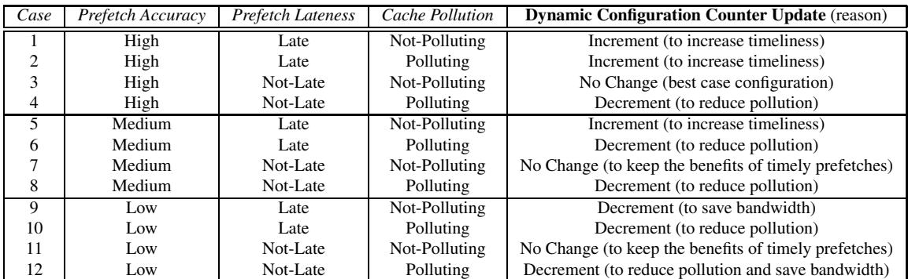
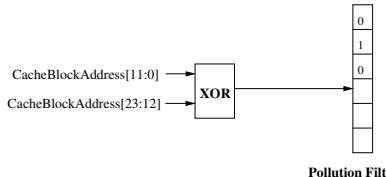
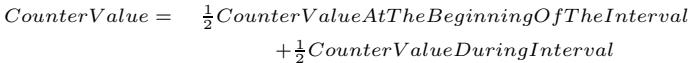

Feedback Directed Prefetching: Improving the Performance and Bandwidth-Efficiency of Hardware Prefetchers 通俗讲解¶
0. 整体创新点通俗解读¶
痛点直击 (The "Why")
- 传统的硬件 prefetcher（预取器）就像一个莽撞的助手：它要么过于保守，不敢多拿数据，导致 memory latency（内存延迟）无法被有效隐藏；要么就过于激进，疯狂地从内存拉数据。
- 这种“激进”会带来两大灾难：
- 浪费带宽：大量预取的数据根本没用上（低 accuracy），却占满了宝贵的 memory bandwidth（内存带宽），甚至拖慢了真正需要的 demand request（需求请求）。
- 污染缓存：无用的预取数据挤掉了未来会用到的有效数据，导致 cache pollution（缓存污染），反而制造了更多 cache miss（缓存缺失），形成恶性循环。
- 最要命的是，这种激进策略在某些程序上（如
ammp,applu）会让性能暴跌近50%，这让芯片设计者不得不采用一个折中的、偏保守的策略，从而牺牲了在其他程序上本可以获得的巨大性能收益。
通俗比方 (The Analogy)
- 想象你是一个图书管理员（CPU），你的办公桌（L2 cache）空间有限。有个实习生（prefetcher）负责帮你从远处的书库（main memory）拿书。
- 传统做法是给实习生一个死命令：“每次看到我查一本书，你就往前/往后拿4本（固定 aggressiveness）。”
- 结果是：如果我在读一本小说（访问模式连续），这招很棒；但如果我在查字典（访问模式随机），他就会把一堆没用的词典堆满我的桌子，把我正在用的那几页都挤掉了，我还得花更大力气去翻找，效率极低。
- Feedback Directed Prefetching (FDP) 的核心思想是：让实习生变得“聪明”一点。他不再死守命令，而是会观察：
- 我拿到他拿的书后，是不是真的用了？（accuracy）
- 他拿的书是不是太晚了，等我急着用时还没到？（lateness/timeliness）
- 他拿的书是不是把我的重要笔记都弄丢了？（cache pollution）
- 基于这些实时反馈，他会动态调整自己的行为：该多拿时多拿，该少拿时少拿，甚至决定把新拿来的书先放在桌子的哪个位置（是放最上面MRU还是快丢掉的LRU），以最小化对我的干扰。
关键一招 (The "How")
- 作者没有发明一种全新的预取算法，而是在现有的主流预取器（如 stream prefetcher, GHB-based prefetcher）之上，巧妙地增加了一个轻量级的 feedback loop（反馈回路）。
- 这个回路通过几个精巧的硬件计数器和一个 Bloom filter（用于低成本估算缓存污染），在运行时持续监控三个核心指标：accuracy, lateness, 和 pollution。
- 基于这些指标，FDP 动态地做两件事：
- 调整预取激进度：通过一个饱和计数器（Dynamic Configuration Counter）来动态改变 Prefetch Distance 和 Prefetch Degree。例如，当检测到高污染时，就立刻降低激进度。

- 调整缓存插入策略：不再总是把预取的数据块放到 MRU（最近最少使用栈顶）。而是根据污染程度，智能地选择插入到 MID, LRU-4 或 LRU 位置。这样，可疑的预取数据不会霸占缓存太久，减少了污染风险。
- 这套机制的成本极低（仅 2.54 KB 额外存储），却带来了显著的收益：在 SPEC CPU2000 测试中，相比最好的传统配置，平均性能提升 6.5%，同时 内存带宽消耗减少 18.7%，并且完全消除了在
ammp和applu等程序上的性能倒退。

Table 5. Average IPC and BPKI for FDP vs conventional prefetchers
1. 动态反馈驱动的预取器激进度调整 (ELI5)¶
痛点直击 (The "Why")
- 传统的硬件预取器（如 stream prefetcher）的激进度（由 Prefetch Distance 和 Prefetch Degree 决定）是静态的，在芯片设计时就固定死了。
- 这导致了一个非常难受的局面：对于某些程序（如
mgrid），激进的预取能带来巨大性能提升；但对于另一些程序（如ammp,applu），同样的激进策略会因为产生大量无用预取 (useless prefetches) 而严重拖累性能。 - 这些无用预取主要通过两种方式造成伤害：
- 浪费内存带宽：宝贵的总线资源被无用数据占据，导致真正的demand request（程序实际需要的数据）被延迟。
- 引发缓存污染 (cache pollution)：无用的预取数据挤占了 L2 缓存空间，把未来真正会用到的数据给踢出去了，反而制造了更多 cache miss。
- 因此，芯片厂商为了“求稳”，往往只能采用一个折中偏保守的默认配置，牺牲了在友好程序上本可以获得的巨大收益。
通俗比方 (The Analogy)
- 想象你是一个图书管理员（预取器），负责为一位正在写论文的研究员（CPU）提前从书库（主存）拿书（数据块）放到他的桌上（L2 缓存）。
- 以前的做法是，你有一个固定的“服务套餐”：要么每次只拿1本书（保守），要么一次拿4本并且提前看好几章的内容（激进）。
- 问题在于，研究员今天可能在精读一本很难的书（像
ammp），他翻页很慢，你拿太多书只会堆满他的桌子，把他手边重要的草稿纸都挤掉了。但明天他可能在快速查阅资料（像mgrid），翻页飞快，如果你不提前多拿点，他就会一直等着你跑腿而停工。 - Feedback Directed Prefetching (FDP) 的核心思想就是，你不再死守一个套餐，而是边服务边观察：
- 你数一数你拿的书里，有多少本他真的用上了（准确率）。
- 你留意他是不是经常在你去拿书的路上就急着要那本书了（及时性/lateness）。
- 你还注意他的桌子上是不是因为你拿的书太多，导致他找不到自己刚写的笔记了（缓存污染）。
- 根据这些实时反馈，你动态地决定下次是该少拿点、多拿点，还是改变放书的位置。
关键一招 (The "How")
- 作者没有重新发明预取算法，而是在现有预取器的工作流程中，巧妙地插入了一套轻量级的“监控-决策”反馈回路。
- 监控环节：通过几个低成本的硬件计数器和一个基于 Bloom filter 的污染估算器，在运行时持续收集三个核心指标：
- 准确率 (Accuracy)：通过给预取块打
pref-bit标签，并统计被 demand 访问的次数来计算。 - 及时性 (Lateness)：通过检查 MSHR（Miss Status Holding Register）来判断 demand 请求是否在预取请求完成前就到达了。
- 缓存污染 (Pollution)：使用一个 4096-entry bit vector 来近似追踪因预取而被踢出的有用数据块。
- 准确率 (Accuracy)：通过给预取块打
- 决策环节：系统以采样间隔（基于 L2 缓存驱逐次数定义）为周期，根据这三个指标的当前值与预设阈值的比较结果，查一张简单的决策表（见下表），来动态调整预取器的配置。
- 最终，这个机制将一个静态的、一刀切的预取器，变成了一个能感知环境、自我调节的智能代理。
除了调整激进度，FDP 还有一招妙棋：动态调整预取块在 LRU 栈中的插入位置。
- 传统做法是把所有预取块都插到 MRU（Most Recently Used）位置，这在预取准确时很好，但在不准时会加剧污染。
- FDP 根据估算的污染程度，决定是插到 MID、LRU-4 还是直接插到 LRU 位置。污染越严重，预取块的“初始寿命”就越短，从而自动降低了其对缓存的干扰。
最终效果非常显著：相比最好的静态激进配置，FDP 在 SPEC CPU2000 的 17 个内存密集型 benchmark 上，平均性能提升 6.5%，同时内存带宽消耗降低 18.7%。更重要的是，它彻底消除了在 ammp 和 applu 等程序上的巨大性能损失。
| 配置 | 平均 IPC | BPKI (带宽) |
|---|---|---|
| Very Aggressive (传统) | 1.00x | 1.00x |
| FDP (本文) | 1.065x | 0.813x |
| Middle-of-the-Road (传统) | 0.945x | 0.821x |
Table 5. Average IPC and BPKI for FDP vs conventional prefetchers
2. 基于布隆过滤器的预取缓存污染估算 (ELI5)¶
痛点直击
传统硬件预取器（Prefetcher）是个典型的“好心办坏事”的角色。它为了加速程序，会提前把数据拉进缓存。但如果预测错了，或者拉得太早，这些没用的预取数据就会把真正需要的需求块（demand block）给挤出去，这就是预取器造成的缓存污染（Prefetcher-Generated Cache Pollution）。要解决这个问题，最直接的想法是：精确追踪每一个被预取块挤出去的需求块，并在后续发生缺失时，判断这个缺失是不是预取器的锅。
- 但这在硬件上几乎不可能实现。你需要一个巨大的表来记录所有被驱逐块的历史，这会带来无法承受的存储开销和访问延迟。
- 硬件设计追求的是低成本、高效率的近似方案，而不是完美的精确计算。所以，核心痛点在于：如何用极小的硬件代价，对这种“因果关系”（预取导致了后续缺失）做出一个足够好的估算？
通俗比方
想象你是一个图书管理员（Cache Controller），你的书架（Cache）空间有限。有个热心但有点莽撞的助手（Prefetcher）会不断把新书（预取块）塞到书架上，有时会不小心把你标记过“重要”的书（需求块）扔到废纸篓里。
你想知道这个助手到底闯了多少祸。但你没有精力去记住每一本被扔掉的书的名字（精确追踪成本太高）。
于是，你发明了一个巧妙的办法：
- 你准备了一张巨大的打孔卡片（布隆过滤器的位向量）。
- 每当助手把一本“重要”的书扔掉时，你就根据这本书的书名，用几个不同的哈希函数算出几个位置，在卡片上把对应的孔打穿（将位向量中的对应bit置1）。
- 过了一会儿，有读者来借一本书（发生需求缺失），你先不急着去仓库找，而是先拿这本书的书名去你的打孔卡片上“验一验”。
- 如果卡片上对应的所有孔都已经被打穿了（所有bit都是1），你就高度怀疑这本书之前就是被你的莽撞助手扔掉的！虽然偶尔会有误判（别的书也恰好打穿了这几个孔），但这个方法能让你用一张薄薄的卡片，就对助手的“破坏力”有一个相当靠谱的估计。

Figure 3. IPC performance (left) and prefetch lateness (right) with different aggressiveness configurations Figure 4. Filter to estimate prefetcher-generated cache pollution
关键一招
作者并没有试图去完美记录每一个被驱逐块的完整地址历史，而是巧妙地利用布隆过滤器（Bloom Filter）这一概率数据结构，将“因果追踪”问题转换成了一个“存在性查询”问题。
- 替换的操作：用一个4096-entry的位向量（bit-vector）替换了那个理论上需要无限大的驱逐块历史记录表。
- 扭转的逻辑：
- 写入阶段：当一个因预取请求而被驱逐的需求块离开缓存时，系统不是记录它的完整地址，而是用其地址的一部分（通过XOR操作）作为索引，将位向量中对应的一个bit置1。这相当于在“嫌疑名单”上做了个模糊标记。
- 读取/验证阶段：当一个新的需求缺失发生时，系统立即用缺失地址去查询这个位向量。如果对应的bit是1，就认为这次缺失很可能是由预取器造成的，并递增pollution-total计数器。
- 重置机制：当一个预取请求成功将数据填回缓存时，会将其地址对应的bit清零。这是一个非常精妙的设计，它模拟了“如果预取的数据最终被用上了，那么它当初驱逐别人的行为就不算污染”，从而让这个估算更加准确。
这套机制的核心智慧在于，它接受了一定程度的假阳性（False Positive，即一个缺失被错误地归咎于预取器），但完全避免了假阴性（False Negative），并且以极低的硬件成本（仅4KB）为反馈系统提供了至关重要的污染度量（pollution metric），使得动态调整预取策略成为可能。
3. 基于污染感知的动态缓存插入策略 (ELI5)¶
痛点直击
- 传统的硬件预取器（prefetcher）有个“死脑筋”：它总是把预取到的数据块一股脑地塞进缓存的 MRU (Most-Recently-Used) 位置。这么做的初衷很好——让预取的数据在缓存里活得久一点，等程序真正用到时还在。
- 但问题在于，预取器并不总是对的。当它预测错误或者程序行为突变时，这些没用的预取块就变成了 缓存污染 (cache pollution)。它们霸占着宝贵的缓存空间，把真正会被程序用到的 demand-fetched blocks 给挤出去了。
- 更糟糕的是，这种策略是“一刀切”的。无论当前预取器是在高效工作还是在疯狂制造垃圾，它都用同样的方式插入数据。这就导致了一个两难困境：激进的预取能带来巨大收益，但一旦出错，造成的性能损失也极其惨重（如论文中提到的
ammp和applu基准测试）。
通俗比方
- 想象你是一个图书管理员（缓存控制器），你的任务是管理一个容量有限的热门书架（L2 cache）。有个热心但有时会犯错的助手（prefetcher）会提前把一些他认为读者会借的书放到书架上。
- 如果这个助手非常靠谱（高准确率、低污染），你会很乐意把他拿来的书放在书架最显眼、最容易拿到的位置（MRU），这样读者一来就能立刻看到。
- 但如果这个助手最近老是拿些没人看的冷门书来（高污染），你还把他放最前面，就会把真正热门的书给挡在后面甚至挤下书架。这时候，聪明的做法是，你让他把新书先放在书架靠后一点、不那么显眼的位置（比如 MID 或 LRU-4）。如果这本书真有人要，读者还是会找到它，并把它移到前面；如果没人要，它很快就会被自然淘汰，不会长期占用宝贵空间。
- 这个机制的核心思想就是：根据助手近期的“信用评级”（即缓存污染程度），动态调整他送来的书在书架上的初始摆放位置。
关键一招
- 作者并没有改变预取器本身的工作逻辑，而是在缓存的插入策略上做了一个巧妙的、动态的开关。具体来说：
- 他们设计了一个轻量级的硬件结构（一个基于 Bloom filter 的 pollution filter，见图4
00535b5d378692089bc46ed2258d275e0e6d1cd80ea05c2799eef09253a25325.jpg），用于在运行时实时估算 prefetcher-generated cache pollution。 - 在每个固定的采样周期结束时，系统会读取这个污染估算值，并将其与预设的阈值（
Plow,Phigh）进行比较。 - 根据比较结果，系统会为下一个周期选择一个合适的插入点：
- 低污染 -> 插入 MID 位置（平衡策略）
- 中等污染 -> 插入 LRU-4 位置（更保守）
- 高污染 -> 插入 LRU 位置（最保守，让预取块自生自灭）
- 他们设计了一个轻量级的硬件结构（一个基于 Bloom filter 的 pollution filter，见图4
- 这个“扭转”点在于，将原本静态、固定的缓存插入策略，变成了一个由 实时反馈信号（污染程度） 驱动的动态决策过程。这使得系统既能享受激进预取带来的好处，又能迅速抑制其在错误场景下造成的破坏。

Figure 8. Distribution of the insertion position of prefetched blocks
上图（70f8d913f7463350949980738a8c1304c6e031abbb64d9302047e97800c10cb0.jpg）清晰地展示了这个策略的效果。对于 applu 和 ammp 这类高污染基准，动态策略（Dynamic Insertion）大部分时间都选择了最保守的 LRU 插入，从而避免了性能崩溃，同时在其他基准上又能灵活选择更优的位置以获取性能增益。
4. 基于采样的运行时反馈收集机制 (ELI5)¶
痛点直击 (The "Why")
- 传统的硬件预取器（如 Stream Prefetcher）的 Prefetch Distance 和 Prefetch Degree 是在芯片设计时就静态固化的。这就像给所有病人开同一张药方，完全无视病情变化。
- 程序的内存访问行为是高度动态的，会随着时间进入不同的“执行阶段”（memory phase）。在一个阶段里，激进的预取可能效果拔群；但在下一个阶段，同样的激进策略可能因为准确率低、造成严重Cache污染或带宽浪费而让性能雪崩（如论文中 ammp 性能暴跌48%）。
- 如果反馈太慢（比如在整个程序跑完后才统计），或者反馈指标太粗糙，预取器就无法及时“踩刹车”或“踩油门”，导致在错误的阶段执行了错误的策略。
通俗比方 (The Analogy)
- 这套机制就像是给预取器装上了一个智能巡航系统。这个系统不会只看一眼地图（静态配置）就定好全程速度。
- 它会把旅程分成一个个小路段（采样区间）。在每个路段结束时，它会立刻复盘：刚才这段路开得怎么样？是不是超速了（Cache Pollution太高）？是不是开太慢错过了路口（Prefetch Lateness太高）？油耗（Memory Bandwidth）是不是太高了？
- 根据这个即时复盘的结果，它会动态调整下一路段的车速和驾驶风格（预取激进度和缓存插入位置），确保全程又快又稳还省油。
关键一招 (The "How") 作者没有采用基于固定时间或指令数的采样，而是提出了一个极其巧妙且低成本的触发条件：以L2缓存的实际活动强度作为采样节奏的标尺。
- 核心逻辑转换：将“何时收集一次反馈”这个问题，从一个与程序行为脱节的外部时钟，转变为由程序自身内存压力驱动的内部事件。
- 具体实现：
- 引入一个硬件计数器 eviction-count，专门记录从L2缓存中被驱逐出去的块的数量。
- 设定一个阈值 Tinterval（实验中设为8192，约等于L2缓存块数的一半）。
- 每当 eviction-count 超过 Tinterval，就宣告当前采样区间结束。这意味着，采样区间的长度是自适应的：内存访问密集、缓存压力大的时候，区间就短，反馈更频繁；反之，区间就长。
- 在区间结束时：
- 使用类似指数移动平均的公式（
CounterValue = α * CounterValue + (1-α) * CounterValueDuringInterval）来更新三个核心指标的历史估值。
- 使用类似指数移动平均的公式（

- 基于这些最新的、反映最近程序行为的指标（Accuracy, Lateness, Pollution），通过一张决策表（Table 2）来决定下一区间的预取策略。
- 重置 eviction-count 和所有区间内计数器，开始新的采样周期。
这种设计的精妙之处在于，它用极低的硬件开销（一个计数器加一个比较器），就实现了与程序真实内存压力强相关的反馈节奏，确保了反馈信息的时效性和相关性，从而让动态调整真正有效。